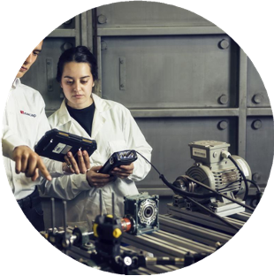
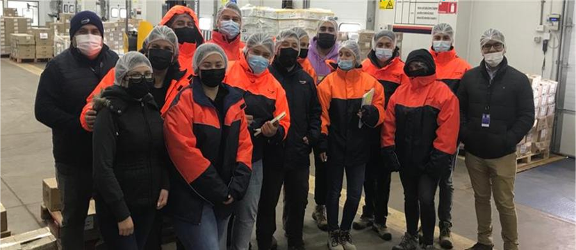

Aprendizaje Integrado al Sector Productivo y de Servicios (API)
Conectamos el aula con el mundo real para transformar entornos y trayectorias
Conectamos el aula con el mundo real para transformar entornos y trayectorias
El Modelo API es desarrollado e implementado por la Vicerrectoría Académica de INACAP cuyo objetivo es el diseño y aplicación de estrategias y espacios formativos que integran el aprendizaje al mundo laboral real, fortaleciendo la experiencia e inserción de los estudiantes, y generando valor para las empresas y organizaciones del entorno.
Formamos profesionales conectados con el mundo laboral, impulsando su desarrollo a través de experiencias reales que generan impacto en los territorios y sectores productivos. Nos enfocamos en:
Cuando API es aplicado en asignaturas, se integra el aprendizaje práctico y la innovación, desarrollando competencias clave a través de desafíos reales y metodologías colaborativas:
Los Proyectos/Desafíos son estructurados por las áreas académicas en sede central junto a una empresa, se utilizan como caso y se trabajan en aula como material instruccional (Tour Virtual).
Los Proyectos/Desafíos son estructurados por las sedes en conjunto con las empresas u organizaciones locales. Se usa el mismo material instruccional de API 1.
Los estudiantes desarrollan una función específica durante al menos 12 horas, cuentan con un maestro guía de la empresa quién los evalúa junto a docentes INACAP.
Proyectos destacados:
Escríbenos y co-creemos el futuro de la innovación. Cada sede INACAP tiene un equipo listo para apoyarte.
